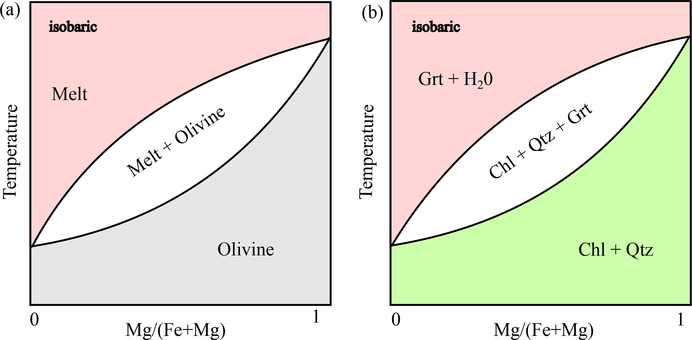

The (chemical) Stefan problem
The Stefan problem describes the movement of a reaction front in a thermodynamically constrained system — the propagation of an ice front, or the crystallization/resorption of minerals, are classic examples [7]. MovingBoundaryMinerals.jl solves this directly for mineral growth and resorption, using a digitized phase diagram to constrain the interface composition rather than a fixed partition coefficient. This page covers the physics and the input parameters specific to that mode; for the full derivation and benchmarks, see [1].
Input parameters
This section covers the input parameters that need more explanation than their names alone provide. Required inputs are: the initial interface position Ri[1] (which also sets the size of the left phase in the composition profile); the composition of interest CompInt, which fixes the starting bulk composition and, from it, the total domain length Ri[2] (see below); the start and end temperature of the growth process (Tstart, Tstop); and the temperature bounds of the digitized phase-diagram section (TMIN, TMAX), which must satisfy Tstart, Tstop $\in$ [TMIN, TMAX] — don't confuse the two pairs. All temperatures are given in K. The phase-transformation-line coefficients go in eq_values.
Determining the interface composition
Digitizing two adjacent reaction lines of the phase diagram reduces it to the binary, two-phase system our code solves for (see Digitization). This works for both magmatic (a) and metamorphic (b) systems — any pair of reaction lines bounding a two-phase field, e.g. melt + olivine or the garnet-forming dehydration reaction chlorite + quartz $\rightleftharpoons$ garnet + H$_2$O shown below, reduces to the same binary setup:

Figure 1 of [1] (© Author(s) 2025, distributed under the Creative Commons Attribution 4.0 License).Each line is fit as a quadratic function of temperature:
\[X(T) = a + b T + c T^2 \qquad (1)\]
We use these polynomials (composition) to determine the equilibrium compositions of the two phases at the starting temperature Tstart, $C_{left}(T_{start})$ and $C_{right}(T_{start})$. The initial composition profile is a step function — two homogeneous regions, one per phase — with each region's composition read directly from these values.
CompInt sets where that step sits, via the lever rule: it is the volume fraction of the left phase in the bulk system, giving a bulk composition
\[X_c = (1 - \mathrm{CompInt})\, C_{right}(T_{start}) + \mathrm{CompInt}\, C_{left}(T_{start})\]
This same lever-rule balance fixes the total domain length, given the initial interface position Ri[1]: for planar geometry (n = 1), mass balance between the two homogeneous regions gives
\[L = R_i[1] \, \frac{C_{right}(T_{start}) - C_{left}(T_{start})}{C_{right}(T_{start}) - X_c}\]
used directly as Ri[2] — i.e. for the Stefan-problem examples, the domain length is derived from CompInt and the phase diagram rather than being a free input like it is for the flux-balance/total mass-balance families.
The examples (D1, D2) and the Chemical_Stefan_problem_XT.jl template all set n = 1, and the domain-length equation above is only verified for that case. The general-geometry form used in the code does not reduce algebraically to this for n = 2/3 — treat cylindrical/spherical Stefan-problem setups as unverified until that's revisited.
Numerical approach
Equilibrium compositions at the interface are evaluated from the phase diagram (or a fixed partition coefficient K_D) at the current temperature and applied as a Dirichlet condition (set_inner_bc_stefan!). Unlike the other two interface conditions (see Boundary Conditions), the interface velocity V_ip is not a model input here — it is solved for at every step, so the growth/resorption rate emerges from the solution rather than being prescribed.
With the diffusive fluxes on either side of the interface,
\[J_{left} = -\rho_{left} D_{left} \left.\frac{\partial C}{\partial x}\right|^{int}_{left}, \qquad J_{right} = -\rho_{right} D_{right} \left.\frac{\partial C}{\partial x}\right|^{int}_{right}\]
evaluated with a first-order finite difference against the interior grid nodes adjacent to the interface, the interface velocity is
\[V_{ip} = \frac{J_{right} - J_{left}}{C_{right}^{int} - C_{left}^{int}}\]
recomputed every time step from the current phase-diagram compositions and diffusivities. $\left(V_{ip}\left(C_{right}^{int}-C_{left}^{int}\right) - \left(J_{right}-J_{left}\right)\right)^2$ is pushed into the Residual array at every step purely as a self-consistency check on this equation (it should stay at machine precision) — see Interpreting Output.
For the shared regridding and diffusion-solve steps, see Numerical Approach.